The way to Alloy Man's door. Six backdrops, all built from his colours, and the steel plates picked in the first round with three new pairs of doors. Batch 3 of 3.
Picked by the owner on 6 Nov 2026, in their words: "1, 2, 5 and material B. I want the backdrop to tell an assembly line story of low poly, mildly variable steel copies of the player, progressing from the ladle to the billets, to a stamp, to welding arms, to the the end of the conveyor belt where they are dropped into a black pit that extends below the visible area, implying that they are getting dumped into a pit".
So: backdrops 1, 2 and 5 were joined into one new backdrop 5, the assembly line, with the steel plates and door pair B, the blast doors. Backdrops 1 and 2 are left as they were, for comparison.
Then, on 9 Nov 2026: loop 1 ("lock in 1"); for what moves the line on, the time to the door (a door is placed by its timer, not ahead, so how much of the timer has run is the only known share of the way); and "B" for the doors. In the game since 10 Nov 2026. Each stretch of belt takes its phase as it comes in at the right edge: ladles until 30% of the timer, presses until 60%, the arms until 85%, then the belt's end over the pit, once.
IN THE GAME
Four photos from the game at different points of the door timer: ladles; the presses arriving as the last ladle leaves; the arms; and further on, still the arms.
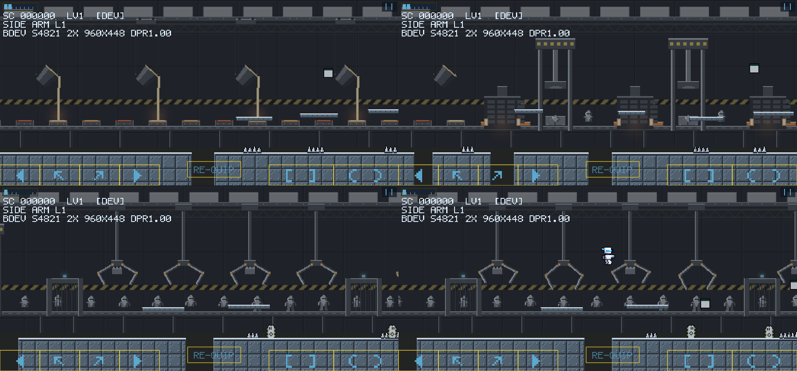
YOUR PICK · 5 WITH B
Backdrop 5 behind the steel plates and the blast doors, with the player standing still. Read it left to right: the ladle pours, the billets cool on the rollers, the press stamps each one into a flat cut-out of the player, the two welding arms raise it into a steel copy, each copy a little different, and at the end of the belt the copies topple into a black pit that carries on below the screen. The boss door is on the left, the exit door on the right.
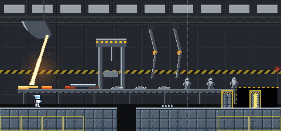
THE LINE IN THREE PHASES
Your plan for the line, as it would play in the game: each phase repeats for a while, then the next phase's machines start arriving from the right while the last ones drift off to the left, and the pit comes once, at the very end. Where a machine meets another of its kind, the belt runs through a furnace (phase 2) or a gate (phase 3), so the pieces can start over. Both ways of moving you asked to see are side by side: each phase on its own, then a short walk through all of them. Tell me A or B, or a mix.
A · ONE BEATThe belt moves one slot, then stands while everything works: pouring, pressing, welding and tipping into the pit, all on one beat of 2 seconds, so the phases line up where they meet.
B · ALWAYS MOVINGThe belt never stops. Each ladle, press and pair of arms rides along with its item while it works, then hurries back for the next.
A PHASE 1 · LADLESLadles of molten steel on the overhead rail, each tipping to pour into a mould under it. The billets glow white, then cool a little, to orange, until the next ladle tops them up.
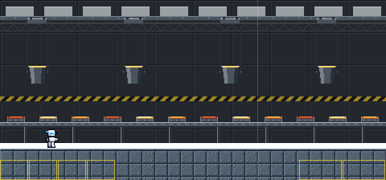
B PHASE 1 · LADLESLadles of molten steel on the overhead rail, each tipping to pour into a mould under it. The billets glow white, then cool a little, to orange, until the next ladle tops them up.A PHASE 2 · PRESSESA furnace feeds each press a hot billet. The press comes down and shapes the head and torso, the steel cools from orange to grey in that shape, the press lifts, and a hinged table tips the piece upright onto its stand.
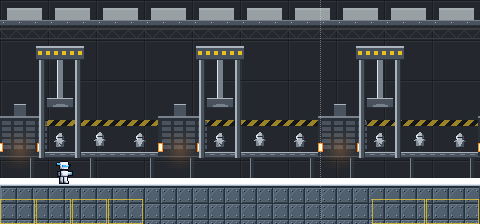
B PHASE 2 · PRESSESA furnace feeds each press a hot billet. The press comes down and shapes the head and torso, the steel cools from orange to grey in that shape, the press lifts, and a hinged table tips the piece upright onto its stand.
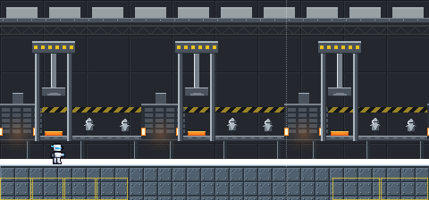
A PHASE 3 · ARMSPast a gate, four pairs of arms: one pair takes arms from its parts bin and fits them, one welds them, one fits legs from its bin, and one welds those. The copies vary a little: a dent, a bent fin, an arm hanging lower, a fleck of rust.B PHASE 3 · ARMSPast a gate, four pairs of arms: one pair takes arms from its parts bin and fits them, one welds them, one fits legs from its bin, and one welds those. The copies vary a little: a dent, a bent fin, an arm hanging lower, a fleck of rust.
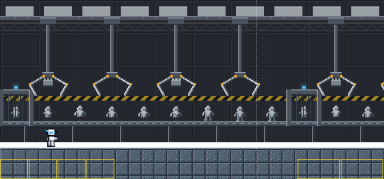
A THE END · ONCE ONLYJust before the boss door: the last two pairs of arms, then the belt's end, where each finished copy tips over the roller into the black pit.B THE END · ONCE ONLYJust before the boss door: the last two pairs of arms, then the belt's end, where each finished copy tips over the roller into the black pit.
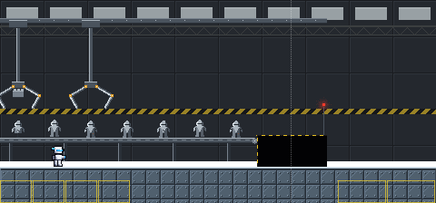
A THE WALKA short walk with the camera moving: ladles, then presses, then arms, then the end. Here each phase lasts two stations (phase 3, one set of four pairs), standing in for a third of the way; in the game each would last much longer. Watch the seams: nothing switches at once.
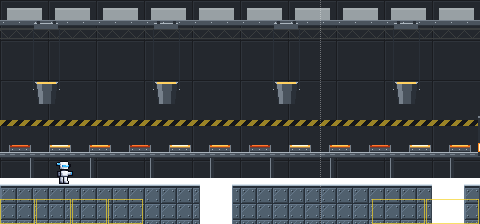
B THE WALKA short walk with the camera moving: ladles, then presses, then arms, then the end. Here each phase lasts two stations (phase 3, one set of four pairs), standing in for a third of the way; in the game each would last much longer. Watch the seams: nothing switches at once.
B, MUTED · TWO WAYS TO LOOP IT
You picked B, always moving, with the whole backdrop muted so it sits back behind the floor, the player and everything you fight; both walks below are muted that way. They differ in how the line repeats. Picked by the owner on 9 Nov 2026, in their words: "i hate 2, where the whole process repeats. lock in 1". Still to choose: the progress measure that moves the line on (kill count, score, steps or time), and the doors below.
1 PHASES BY PROGRESS PICKEDAs before: each phase repeats until the progress measure moves the line on to the next, the old machines drifting off to the left as the new ones arrive from the right. The pit comes once, at the very end.
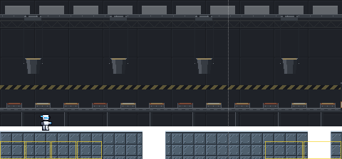
2 THE WHOLE LINE REPEATSEvery phase in order, once each: a ladle, the furnace and press, the gate and four pairs of arms, then the end of the belt over the pit. Then a new belt starts, fed by a hopper of empty moulds, and the whole line runs again. No progress measure is needed, and the pit comes at the end of every line.
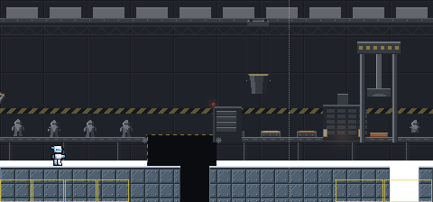
SIX BACKDROPS
Each is shown behind today's plain pieces, so only the backdrop changes. The strip under it is its pit edge with the steel plates in front, once for each pair of doors. The two marked MOVING scroll in layers, the far ones slower; their pictures move.
1 ROLLING MILL MOVINGInside a rolling mill: steel plate walls, a crane gantry overhead, glowing billets on the rollers, steam rising. Scrolls in three layers.
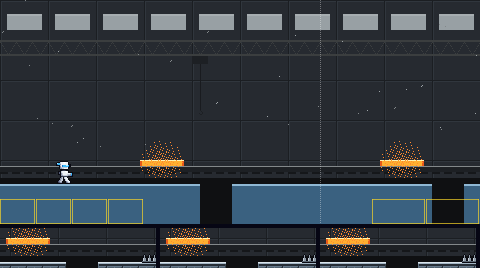
2 FOUNDRYA great ladle tipping molten steel into a mould, the foundry lit orange, sparks flying.
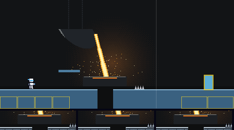
3 SKYSCRAPER FRAMEThe steel frame of a tower going up against a clear sky, riveted beams floor upon floor, a tower crane above.
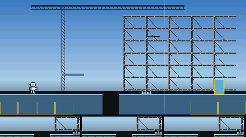
4 SHIPYARDA steel hull in dry dock at dusk, riveted and portholed, gantry cranes standing over it.
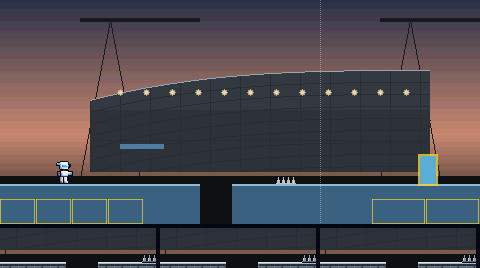
5 ASSEMBLY LINE MOVINGPICKEDThe line, built from 1, 2 and 5: the ladle pours, billets cool on the rollers, a press stamps each into a flat cut-out of the player, welding arms raise it into a steel copy, and at the end of the belt the copies topple into a black pit. Scrolls in two layers.
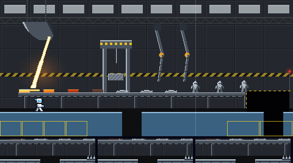
6 STEEL BRIDGEA steel truss bridge across a dark river at night, its lamps reflected in the water, the city beyond.
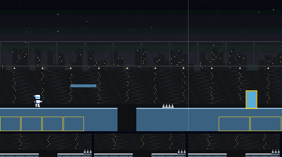
THREE PAIRS OF DOORS
The steel plates were picked in the first round, and you asked for a couple of variants for their doors, both of them. Each picture shows the plates' floor with a pit, a platform and spikes, and one pair of doors: the boss door (left) and the exit door (right). Only the doors differ. The contrast numbers are the plates' own, so they are the same for all three; the game asks at least 2 for the ground, 4.5 for its lit edge and 4.5 for the white player on it.
A STEEL PLATES · VAULT DOORSThe steel plates picked in the first round, with round vault doors: bolted and wheeled for a boss, swung open on gold light for the way out.Contrast: ground 2.94, edge 9.03, player 6.48.
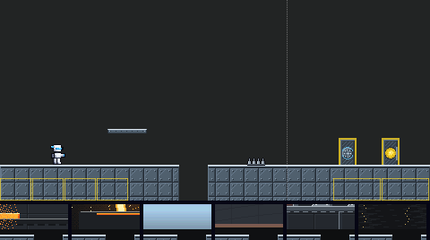
B STEEL PLATES · BLAST DOORS PICKEDThe steel plates picked in the first round, with blast doors: two thick halves under a hazard stripe, parted on gold light for the way out.Contrast: ground 2.94, edge 9.03, player 6.48.
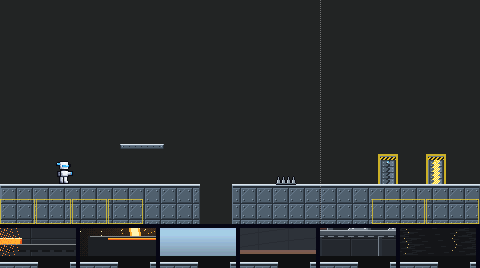
C STEEL PLATES · BULKHEADSThe steel plates picked in the first round, with ship's bulkhead hatches: latched, with a cyan porthole for a boss and a gold one for the way out.Contrast: ground 2.94, edge 9.03, player 6.48.